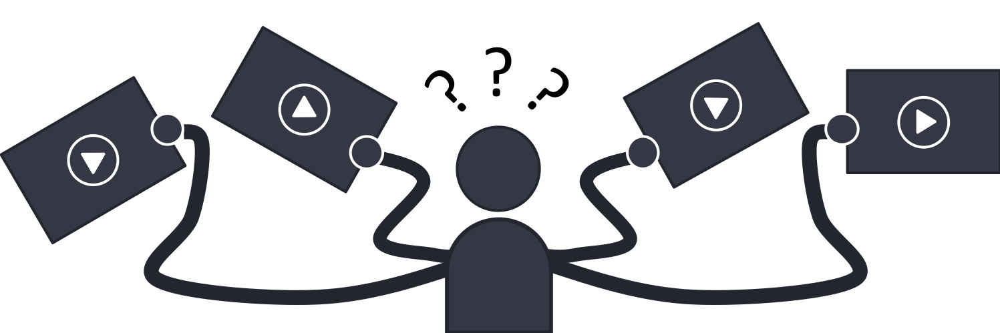
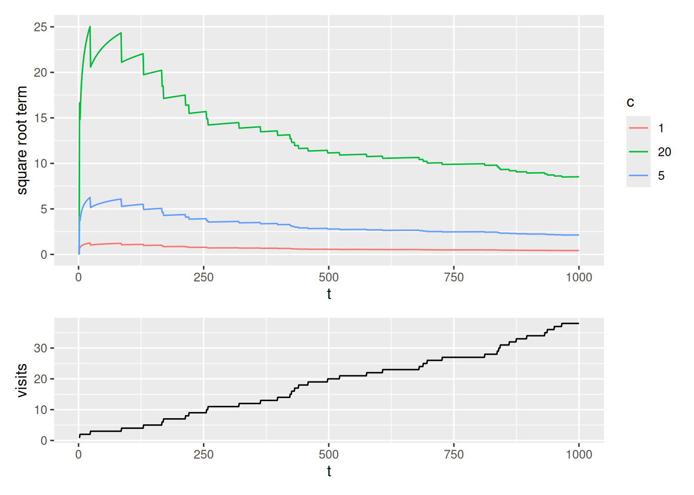

Slides for this module can be seen
here.
You do not have to look at them before the lecture!
5 Multi-armed bandits
This module consider the k-armed bandit problem which is a sequential decision problem with one state and \(k\) actions. The problem is used to illustrate different learning methods used in RL.
The module is also the first module in the Tabular methods part of the notes. This part describe almost all the core ideas of reinforcement learning algorithms in their simplest forms where the state and action spaces are small enough for the approximate value functions to be represented as arrays or tables.
5.1 Learning outcomes
By the end of this module, you are expected to:
- Define a k-armed bandit and understand the nature of the problem.
- Define the reward of a action (action-reward).
- Describe different methods for estimating the action-reward.
- Explain the differences between exploration and exploitation.
- Formulate an \(\epsilon\)-greedy algorithm for selecting the next action.
- Interpret the sample-average (variable step-size) versus exponential recency-weighted average (constant step-size) action-reward estimation.
- Argue why we might use a constant stepsize in the case of non-stationarity.
- Understand the effect of optimistic initial values.
- Formulate an upper confidence bound action selection algorithm.
The learning outcomes relate to the overall learning goals number 1, 3, 6, 9, 10 and 12 of the course.
5.2 Textbook readings
For this week, you will need to read Chapter 2 - 2.7 in Sutton and Barto (2018). Read it before continuing this module. A summary of the book notation can be seen here.
5.3 The k-armed bandit problem
Multi-armed bandits attempt to find the best option among a collection of alternatives by learning through trial and error. The name derives from “one-armed bandit,” a slang term for a slot machine — which is a perfect analogy for how these algorithms work.

Imagine you are facing a wall with \(k\) slot machines (see Figure 5.1), and each one pays out at a different rate. A natural way to figure out how to make the most money (rewards) would be to try each at random for a while (exploration), and start playing the higher paying ones once you have gained some experience (exploitation). That is, from an agent/environment point of view the agent considers a single state \(s\) at time \(t\) and have to choose among \(k\) actions given the environment representing the \(k\) bandits. Only the rewards from the \(k\) bandits are unknown, but the agent observe samples of the reward of an action and can use this to estimate the expected reward of that action. The objective is to find an optimal policy that maximize the total expected reward. Note since the process only have a single state, this is the same as finding an optimal policy \(\pi^*(s) = \pi^* = a^*\) that chooses the action with the highest expected reward. Due to uncertainty, there is an exploration vs exploitation dilemma. The agent have one action that seems to be most valuable at a time point, but it is highly likely, at least initially, that there are actions yet to explore that are more valuable.
Multi-armed bandits can be used in e.g. digital advertising. Suppose you are an advertiser seeking to optimize which ads (\(k\) to choose among) to show visitors on a particular website. For each visitor, you can choose one out of a collection of ads, and your goal is to maximize the number of clicks over time.

It is reasonable to assume that each of these ads will have different effects, and some will be more engaging than others. That is, each ad has some theoretical — but unknown — click-through-rate (CTR) that is assumed to not change over time. How do we go about solving which ad we should choose (see Figure 5.2)?
5.4 Estimating the value of an action
How can the value of an action be estimated, i.e. the expected reward of an action \(q_*(a) = \mathbb{E}[R_t | A_t = a].\) Assume that at time \(t\) action \(a\) has been chosen \(N_t(a)\) times. Then the estimated action value is \[\begin{equation} Q_t(a) = \frac{R_1+R_2+\cdots+R_{N_t(a)}}{N_t(a)}, \end{equation}\] Storing \(Q_t(a)\) this way is cumbersome since memory and computation requirements grow over time. Instead an incremental approach is better. If we assume that \(N_t(a) = n-1\) and set \(Q_t(a) = Q_n\) then \(Q_{n+1}\) becomes: \[ \begin{align} Q_{n+1} &= \frac{1}{n}\sum_{i=1}^{n}R_i \nonumber \\ &= \frac{1}{n}\left( R_{n} + \sum_{i=1}^{n-1} R_i \right) \nonumber \\ &= \frac{1}{n}\left( R_{n} + (n-1)\frac{1}{n-1}\sum_{i=1}^{n-1} R_i \right) \nonumber \\ &= \frac{1}{n}\left( R_{n} + (n-1)Q_n \right) \nonumber \\ &= Q_n + \frac{1}{n} \left[R_n - Q_n\right]. \end{align} \tag{5.1}\] That is, we can update the estimate of the value of \(a\) using the previous estimate, the observed reward and how many times the action has occurred (\(n\)).
A greedy approach for selecting the next action is \[\begin{equation} A_t =\arg \max_a Q_t(a). \end{equation}\] Here \(\arg\max_a\) means the value of \(a\) for which \(Q_t(a)\) is maximised. A pure greedy approach do not explore other actions. Instead an \(\varepsilon\)-greedy approach is used in which with probability \(\varepsilon\) we take a random draw from all of the actions (choosing each action with equal probability) and hereby providing some exploration.
Colab - Before the lecture
5.5 The role of the step-size
In general we update the reward estimate of an action using
\[\begin{equation} Q_{n+1} = Q_n +\alpha_n(a) \left[R_n - Q_n\right] \end{equation}\]
Until now we have used the sample average \(\alpha_n(a)= 1/n\); however, other choices of \(\alpha_n(a)\) is possible. In general we will converge to the true expected reward if
\[\begin{equation} \sum_n \alpha_n(a) = \infty \quad\quad \mathsf{and} \quad\quad \sum_n \alpha_n(a)^2 < \infty. \end{equation}\]
Meaning that the coefficients must be large enough to recover from initial fluctuations, but not so large that they do not converge in the long run. However, if the process is non-stationary, i.e. the expected reward of an action change over time, then convergence is undesirable and we may want to use a constant \(\alpha_n(a)= \alpha \in (0, 1]\) instead. This results in \(Q_{n+1}\) being a weighted average of the past rewards and the initial estimate \(Q_1\):
\[\begin{align} Q_{n+1} &= Q_n +\alpha \left[R_n - Q_n\right] \nonumber \\ &= \alpha R_n + (1 - \alpha)Q_n \nonumber \\ &= \alpha R_n + (1 - \alpha)[\alpha R_{n-1} + (1 - \alpha)Q_{n-1}] \nonumber \\ &= \alpha R_n + (1 - \alpha)\alpha R_{n-1} + (1 - \alpha)^2 Q_{n-1} \nonumber \\ &= \vdots \nonumber \\ &= (1-\alpha)^n Q_1 + \sum_{i=1}^{n} \alpha (1 - \alpha)^{n-i} R_i \\ \end{align}\]
Because the weight given to each reward depends on how long ago it was observed, we can see that more recent rewards are given more weight. Note the weights sum to 1 here, ensuring it is indeed a weighted average where more weight is allocated to recent rewards. Since the weight given to each reward decays exponentially into the past. This sometimes called an exponential recency-weighted average.
5.6 Optimistic initial values
The methods discussed so far are dependent to some extent on the initial action-value estimate i.e. they are biased by their initial estimates. For methods with constant step-size \((\alpha)\) this bias is permanent.
We may set initial value estimates artificially high to encourage exploration in the short run. For instance, if the observed rewards in general are below 5, then by setting initial values of \(Q\) to 5 rather than zero, we encourage exploration, even in the greedy case. Here, the agent will almost always be disappointed with its samples because they are less than the initial estimate, and so will explore elsewhere until the values converge.
5.7 Upper-Confidence Bound Action Selection
An \(\epsilon\)-greedy algorithm choose the action to explore with equal probability in an exploration step. It would be better to select among non-greedy actions according to their potential for actually being optimal, taking into account both how close their estimates are to being maximal and the uncertainty in those estimates. One way to do this is to select actions using the upper-confidence bound: \[\begin{equation} A_t = \arg\max_a \left(Q_t(a) + c\sqrt{\frac{\ln t}{N_t(a)}}\right), \end{equation}\]
Note the square root term is a measure of the uncertainty in our estimate (see Figure 5.3).
- It is proportional to \(t\), i.e. how many time-steps have passed and inversely proportional to \(N_t(a)\) i.e. how many times that action has been visited.
- The more time has passed, and the less we have sampled an action, the higher our upper-confidence-bound.
- As the timesteps increases, the denominator dominates the numerator as the ln term flattens.
- Each time we select an action our uncertainty decreases because \(N\) is the denominator of this equation.
- If \(N_t(a) = 0\) then we consider \(a\) as a maximal action, i.e. we select first among actions with \(N_t(a) = 0\).
- The parameter \(c>0\) controls the degree of exploration. Higher \(c\) results in more weight on the uncertainty.
Since upper-confidence bound action selection select actions according to their potential, it is expected to perform better than \(\epsilon\)-greedy methods.

5.8 Summary
Read Chapter 2.10 in Sutton and Barto (2018).
5.9 Exercises
Below you will find a set of exercises. Always have a look at the exercises before you meet in your study group and try to solve them yourself. Are you stuck, see the help page. Sometimes hints and solutions can be revealed. Beware, you will not learn by giving up too early. Put some effort into finding a solution!
5.9.1 Exercise - Advertising
Suppose you are an advertiser seeking to optimize which ads to show visitors on a particular website. For each visitor, you can choose one out of a collection of ads, and your goal is to maximize the number of clicks over time. Assume that:
- You have \(k=5\) adds to choose among.
- If add \(A\) is chosen then the user clicks the add with probability \(p_A\) which can be seen as the unknown click trough rate CTR (or an average reward).
- The CTRs are unknown and samples can be picked using the
RLAdEnvclass and the reward function which returns 1 if click on ad and 0 otherwise. - In the class the true CTRs can be observed but in practice this is hidden from the agent (you).
Consider this section in the Colab notebook to see the questions and the RLAdEnv class. Use your own copy if you already have one.
5.9.2 Exercise - A coin game
Consider a game where you choose to flip one of two (possibly unfair) coins. You win 1 if your chosen coin shows heads and lose 1 if it shows tails.
See this section in the Colab notebook for questions. Use your own copy if you already have one.